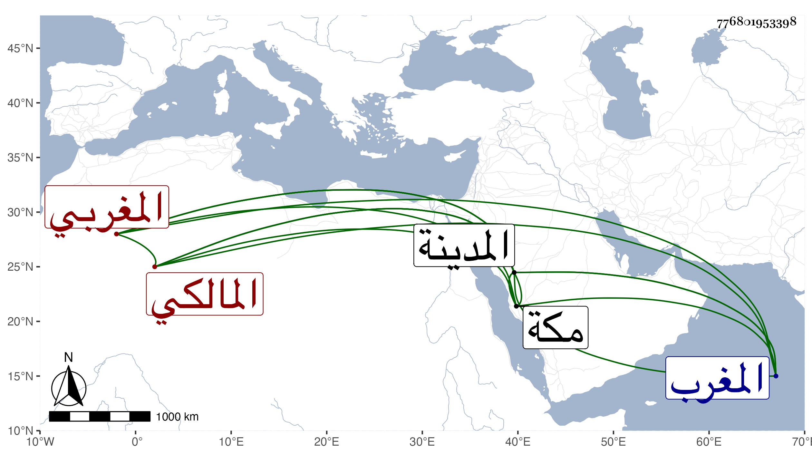

0902Sakhawi.DawLamic.ITO20230111-ara1.EIS1600.776801953398
Biography ID: 776801953398
134
محمد بن محمد النصاري الزنوري المغربي المالكي نزيل المدينة . ولد بزنورة من أقصى المغرب ، وبها نشأ ثم ارتحل بعد موت أبويه في رجب سنة إحدى وعشرين فحج ثم استوطن المدينة منشدا قوله :
| ببابكم حط الفقير رحاله | وما خاب عبد أمكم متوسلا |
| لقد جاء يبغي من نداكم قراءة | وللعفو والإحسان أم مؤملا |
ثم عاد لمكة ثم رجع إليها منشدا لغيره :
| لا كالمدينة منزل وكفى بها | شرفا حلول محمد بفناها |
| حظيت ببهجة خير من وطئ الثرى | وأجلهم قدرا فكيف تراها |
وكان عالما مدرسا في الفقه والعربية واستفيض بين كثيرين من المدنيين أنه كان يختم القرآن بين المغرب والعشاء وأنه كان يكثر زيارة قبا ومشهد حمزة ماشيا ولا يترك في ذلك اليوم تدريسه ، وممن أخذ عنه الشهاب أحمد بن عقيبة القفصي وتأخر إلى بعد الأربعين ، وفي ترجمته من تاريخ المدينة زيادات رحمه الله وإيانا .
